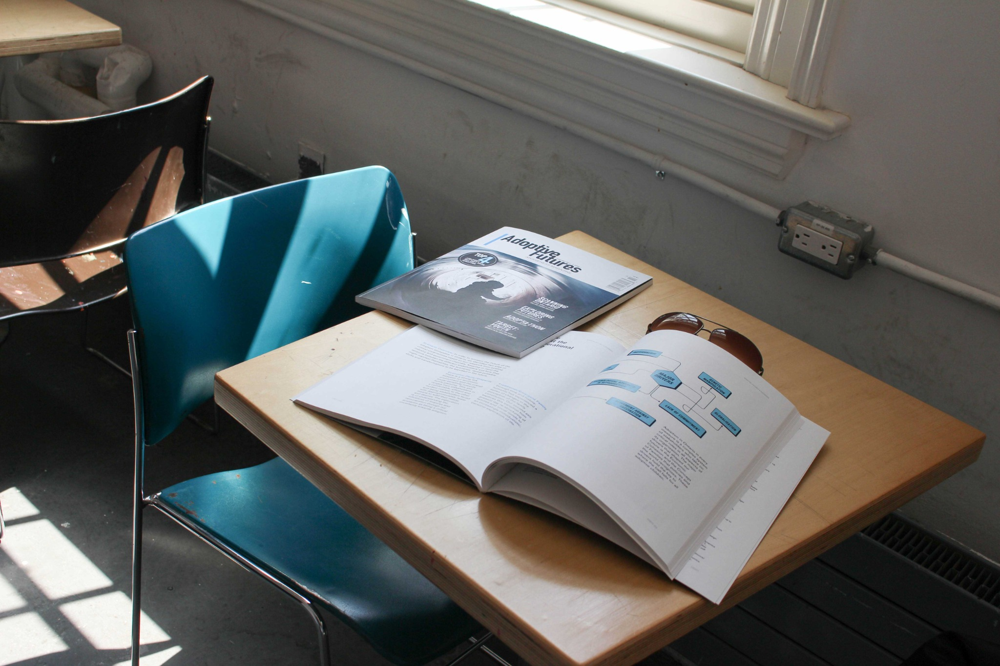
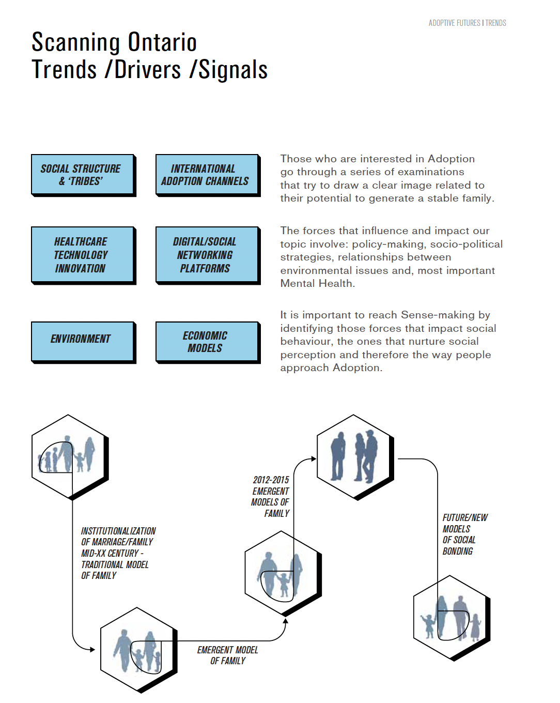
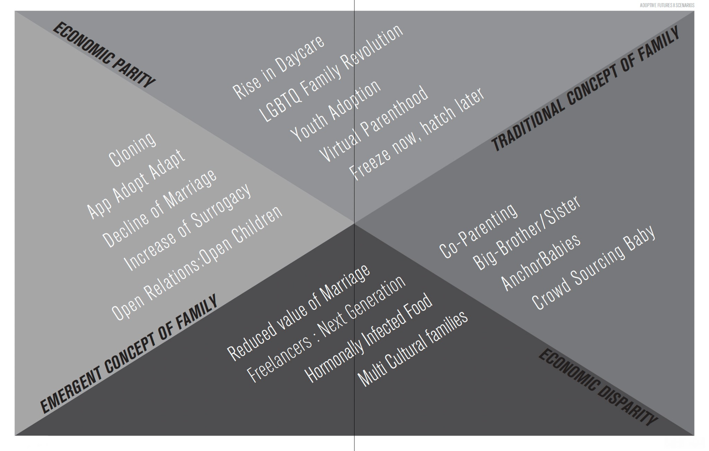
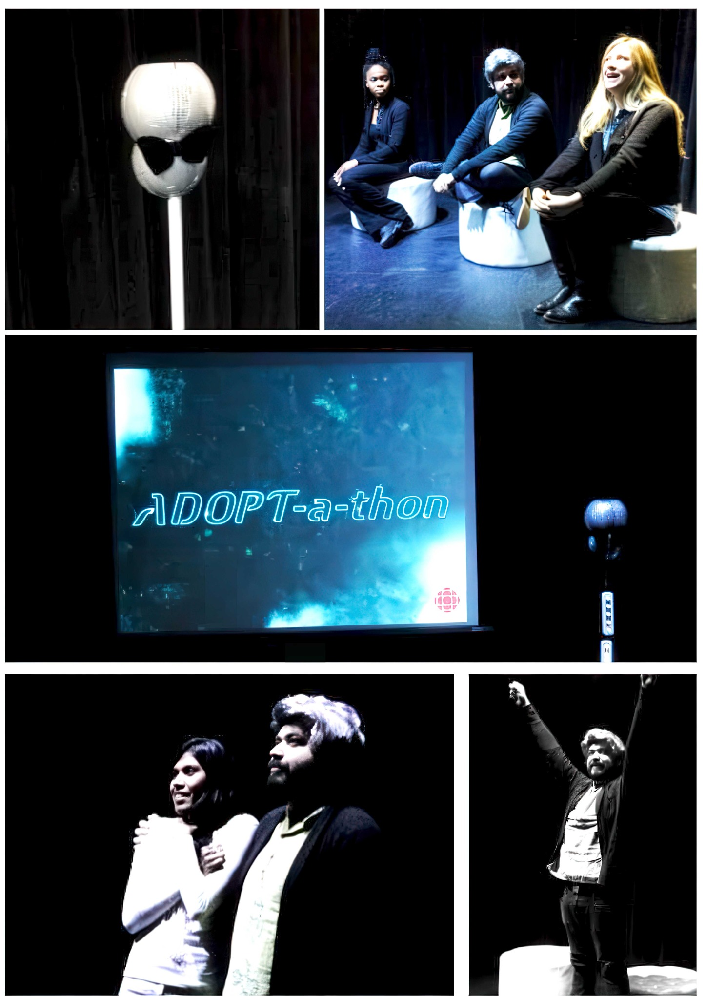

Understanding Ontario’s adoption system
My team explored this question in a Strategic Foresight and Innovation studio at OCAD University in 2015. Through workshops and interviews with an adoption advocacy organization, prospective caregivers, and policymakers, we examined how people find information, navigate the emotional demands of adoption, and encounter institutional assumptions about what a family looks like.

Scanning Ontario
We scanned for trends and early signals that could affect adoption over the next twenty years. We looked at fertility trends, surrogacy policy, emerging forms of co-parenting, and digitally mediated relationships. Together, these raised questions about how definitions of family might change and how well adoption practices could adapt.
View the full-size Ontario scan (opens in a new tab)
Two possible futures for 2035
We built a two-by-two scenario matrix around two uncertainties: how evenly economic opportunity might be shared, and whether traditional or emerging models of family would shape institutions. We developed two scenarios from that exercise, Kronos and the Links of Solitude and Hades and the Sunless Land.
Fictional characters showed how policy and social change might affect everyday decisions about family and caregiving. We brought the research, scenarios, and proposed strategies together in Adoptive Futures, an editorial publication designed to help readers consider where current practices might lead and what could change that trajectory.

The Time Machine
2035 Adopt-a-thon
We staged an immersive installation that took audiences into one speculative version of 2035. At its centre was the Adopt-a-thon, a fictional reality television show in which adults competed to become prospective guardians.
The satire asked what could happen if public institutions responded to pressure for faster placements with a format built around competition and spectacle. By putting that premise on stage, we invited audiences to consider whose needs would drive those decisions and whose voices might be sidelined. I helped write and produce the performance, edited the sound, and created the score.

Project Credits
Program
MDes in Strategic Foresight and Innovation, OCAD University, 2015.
Collaboration
Developed with a team from my OCAD University cohort, with research input from an adoption advocacy organization, prospective caregivers, and policymakers.
My contribution
Foresight research, publication editing and design, installation scriptwriting and performance production, sound editing, and score.